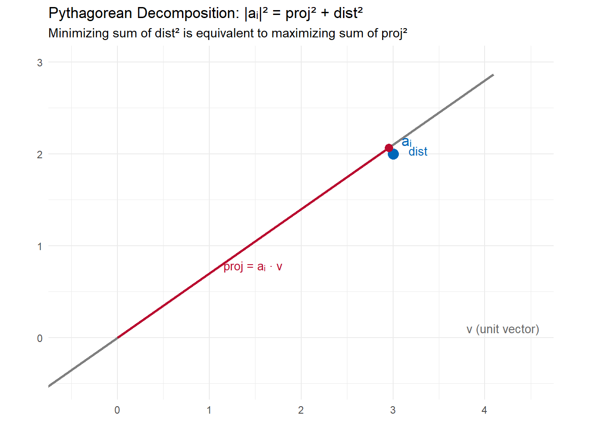
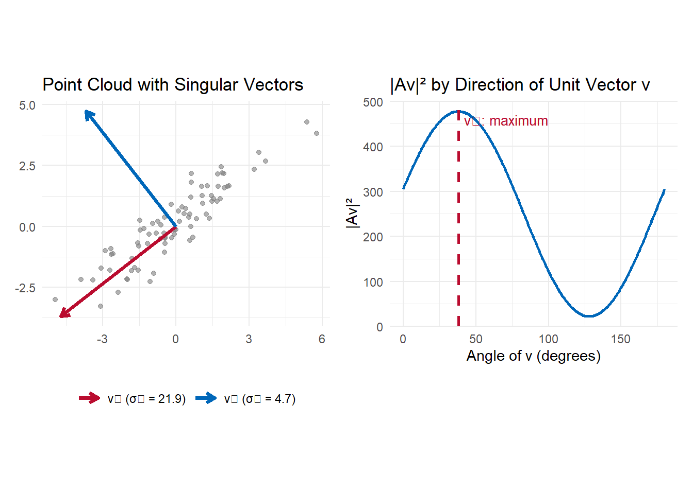

Many data sets can be represented as an \(n \times d\) matrix \(A\), where each of the \(n\) rows is a point in \(d\)-dimensional space. A recurring question in data analysis is: what low-dimensional structure best explains the data? The Singular Value Decomposition (SVD) answers this precisely.
SVD finds the best-fitting \(k\)-dimensional subspace through the origin for any \(k = 1, 2, 3, \ldots\) Here “best” has a specific meaning: the subspace that minimizes the sum of squared perpendicular distances from the data points to the subspace. By the Pythagorean theorem, this is equivalent to maximizing the sum of squared lengths of the projections of the data points onto the subspace. We will use the second formulation extensively because it is easier to work with algebraically.
For \(k = 1\), the best-fit subspace is a line through the origin. SVD finds the direction \(v_1\) that captures the most “content” in the data — the direction along which the data is most spread out. The second direction \(v_2\) (perpendicular to \(v_1\)) captures the next most content, and so on. A key result is that this greedy procedure actually finds the globally optimal subspace of every dimension, not just locally.
3.1.1 The Factorization
The SVD of an \(n \times d\) matrix \(A\) is the factorization
\[A = U D V^T\]
where:
\(V\) is \(d \times r\), with orthonormal columns \(v_1, \ldots, v_r\) — the right singular vectors, the best-fit directions
\(U\) is \(n \times r\), with orthonormal columns \(u_1, \ldots, u_r\) — the left singular vectors
\(D\) is \(r \times r\) diagonal with positive entries \(\sigma_1 \geq \sigma_2 \geq \cdots \geq \sigma_r > 0\) — the singular values
The rank \(r\) is the rank of \(A\). The singular values measure how much content lies in each direction: \(\sigma_i = |Av_i|\), the length of the projection of the data onto \(v_i\).
An equivalent representation is the sum of rank-one matrices:
\[A = \sum_{i=1}^r \sigma_i \, u_i v_i^T\]
Each term \(\sigma_i u_i v_i^T\) is a rank-one matrix capturing the component of \(A\) in the direction \(v_i\). Truncating this sum after \(k\) terms gives the best rank-\(k\) approximation to \(A\).
Let’s see the factorization on a small concrete matrix.
The reconstruction error is negligible (floating-point rounding only), confirming the decomposition is exact.
3.2 Preliminaries
Before defining singular vectors formally, we need one geometric fact that makes the whole theory work.
3.2.1 Projection and the Pythagorean Theorem
Let \(a_i\) be the \(i\)-th row of \(A\), viewed as a point in \(d\)-dimensional space. Let \(v\) be a unit vector defining a line through the origin. By the Pythagorean theorem:
\[|a_i|^2 = (\text{length of projection onto } v)^2 + (\text{distance from } a_i \text{ to line})^2\]
The length of the projection of \(a_i\) onto \(v\) is \(|a_i \cdot v|\) (the absolute dot product). So:
The expression \(\sum_{i=1}^n (a_i \cdot v)^2\) has a clean matrix form. Note that \(a_i \cdot v\) is the \(i\)-th entry of the vector \(Av\). So:
\[\sum_{i=1}^n (a_i \cdot v)^2 = |Av|^2\]
The problem of finding the best-fit line reduces to:
\[\text{find unit vector } v \text{ maximizing } |Av|^2\]
This is the objective function SVD maximizes.

3.3 Singular Vectors
3.3.1 Definition
With the objective \(|Av|^2\) in hand, we can define the singular vectors.
The first right singular vector of \(A\) is the unit vector maximizing \(|Av|^2\):
\[v_1 = \underset{|v| = 1}{\arg\max} \; |Av|\]
The first singular value is the resulting maximum:
\[\sigma_1(A) = |Av_1|\]
Geometrically, \(v_1\) is the direction that captures the most spread in the data. Note that \(\sigma_1^2 = \sum_{i=1}^n (a_i \cdot v_1)^2\) is the sum of squared projections onto \(v_1\).
The second singular vector\(v_2\) is the best-fit direction among all directions perpendicular to \(v_1\):
The greedy procedure continues: \(v_k\) maximizes \(|Av|\) over all unit vectors perpendicular to \(v_1, \ldots, v_{k-1}\). The process terminates at step \(r\) when \(\max_{v \perp v_1, \ldots, v_r} |Av| = 0\), i.e., no remaining content.
3.3.2 The Greedy Algorithm is Globally Optimal
It is not obvious that the greedy procedure — first fix \(v_1\), then find the best \(v_2\) perpendicular to it — produces the globally best 2-dimensional subspace. In fact it does.
Theorem 3.1 (Greedy Algorithm Works): Let \(V_k\) be the subspace spanned by \(v_1, \ldots, v_k\). For each \(k\), \(V_k\) is the best-fit \(k\)-dimensional subspace for \(A\).
Proof sketch for \(k=2\): Let \(W\) be any best-fit 2-dimensional subspace with orthonormal basis \((w_1, w_2)\). Choose the basis so that \(w_2 \perp v_1\). Then \(|Aw_1|^2 \leq |Av_1|^2\) (since \(v_1\) maximizes \(|Av|^2\)) and \(|Aw_2|^2 \leq |Av_2|^2\) (since \(v_2\) maximizes \(|Av|^2\) over directions perpendicular to \(v_1\), and \(w_2 \perp v_1\)). Therefore \(|Aw_1|^2 + |Aw_2|^2 \leq |Av_1|^2 + |Av_2|^2\), so \(V_2\) is at least as good as \(W\). The general case follows by induction. \(\square\)
3.3.3 The Frobenius Norm
Since \(v_1, \ldots, v_r\) span the row space of \(A\), every row \(a_j\) of \(A\) satisfies \(|a_j|^2 = \sum_{i=1}^r (a_j \cdot v_i)^2\). Summing over all rows:
The left side is the sum of squares of all entries of \(A\), known as the squared Frobenius norm\(\|A\|_F^2\). So:
\[\|A\|_F^2 = \sum_{i=1}^r \sigma_i^2\]
The singular values partition the total “content” of \(A\). The fraction of content captured by the first \(k\) components is \(\sum_{i=1}^k \sigma_i^2 / \|A\|_F^2\).
3.3.4 Left Singular Vectors
Having defined the right singular vectors \(v_i\), we define the left singular vectors by normalizing \(Av_i\):
\[u_i = \frac{Av_i}{\sigma_i}\]
The vector \(Av_i\) collects the signed projection lengths of all \(n\) rows of \(A\) onto \(v_i\). Dividing by \(\sigma_i\) makes \(u_i\) a unit vector. We will show in Section 3.6 that the \(u_i\) are orthonormal.
3.3.5 Simulation
Let’s compute the SVD of a correlated two-dimensional point cloud and verify the key quantities.
The two visualizations below show (left) the data with the singular vectors overlaid — \(v_1\) points along the main axis of variation, \(v_2\) is perpendicular — and (right) how \(|Av|^2\) varies as the direction of \(v\) rotates, with the maximum coinciding exactly with \(v_1\).

3.4 Singular Value Decomposition
3.4.1 The Decomposition
Having defined the right singular vectors \(v_1, \ldots, v_r\), the singular values \(\sigma_1, \ldots, \sigma_r\), and the left singular vectors \(u_i = Av_i / \sigma_i\), we can now state the main decomposition theorem.
Theorem 3.4: Let \(A\) be an \(n \times d\) matrix with right singular vectors \(v_1, \ldots, v_r\), left singular vectors \(u_1, \ldots, u_r\), and singular values \(\sigma_1, \ldots, \sigma_r\). Then:
\[A = \sum_{i=1}^r \sigma_i \, u_i v_i^T\]
Proof: Let \(B = \sum_{i=1}^r \sigma_i u_i v_i^T\). It suffices to show \(Av = Bv\) for all vectors \(v\) (Lemma 3.3). Any \(v\) can be written as a linear combination of the \(v_i\) plus a component \(v_\perp\) perpendicular to all \(v_i\).
For each \(v_j\): \[Bv_j = \sum_{i=1}^r \sigma_i u_i (v_i^T v_j) = \sigma_j u_j = \sigma_j \cdot \frac{Av_j}{\sigma_j} = Av_j\]
For \(v_\perp \perp v_i\) for all \(i\): \(Bv_\perp = 0\). And \(Av_\perp = 0\) because \(v_\perp\) is perpendicular to all singular vectors, meaning it lies in the null space of \(A\). Therefore \(Av = Bv\) for all \(v\), so \(A = B\). \(\square\)
The matrix equation \(Av_i = \sigma_i u_i\) and \(A^T u_i = \sigma_i v_i\) follows from the decomposition directly.
3.4.2 Key Properties
Singular values are unique. The sequence \(\sigma_1 \geq \sigma_2 \geq \cdots \geq \sigma_r > 0\) is uniquely determined by \(A\). The singular vectors are unique (up to signs) when all singular values are distinct.
Connection to eigenvalues. The right singular vectors \(v_i\) are eigenvectors of the symmetric matrix \(A^T A\), with eigenvalues \(\sigma_i^2\). This provides a practical route to computing the SVD.
The 2-norm. The largest singular value \(\sigma_1\) equals the matrix 2-norm: \(\|A\|_2 = \max_{|x| \leq 1} |Ax| = \sigma_1\).
For square invertible \(A\). The inverse is \(A^{-1} = V D^{-1} U^T\).
3.4.3 Rank-\(k\) Approximation
The truncated sum \(A_k = \sum_{i=1}^k \sigma_i u_i v_i^T\) is the best rank-\(k\) approximation to \(A\) in the Frobenius norm (Theorem 3.6). The approximation error is:
\[\|A - A_k\|_F^2 = \sum_{i=k+1}^r \sigma_i^2\]
The fraction of total content retained is \(\sum_{i=1}^k \sigma_i^2 / \|A\|_F^2\). When the singular values drop off quickly — indicating low-rank structure — a small \(k\) can approximate \(A\) very well.
The heatmaps below show the rank-\(k\) reconstructions compared to the original. With \(k = 1\) the dominant pattern is captured but much detail is lost. By \(k = 3\) (matching the true signal rank) the structure is largely recovered, with subsequent components absorbing the noise.